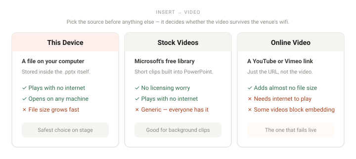

To insert a video in PowerPoint: go to Insert → Video and choose your source — This Device for a file on your computer, Stock Videos for Microsoft's built-in library, or Online Video to paste a YouTube link. Then use the Playback tab to set whether it starts automatically or on click.
There are three ways to get video into a slide, and picking the wrong one is the source of nearly every "my video won't play" problem. The short version: a video from your device is embedded and works offline but bloats the file, while an online video is just a link — tiny file, but it needs a live internet connection in the room.
Step by step
-
Decide which source you need
This decision matters more than the rest of the steps combined.
This Device — a file on your computer. It gets embedded in the .pptx, so it plays without internet and travels with the file. The cost is file size: a few minutes of HD video can add hundreds of megabytes.
Stock Videos — Microsoft's built-in library of short clips. Convenient for background and b-roll, no licensing worry, no internet needed at present time.
Online Video — a YouTube or Vimeo link. Adds almost nothing to the file size, but streams live, so it needs the venue's wifi to actually work.If you are presenting somewhere you do not control, use This Device every time. Conference wifi failing during your demo is a cliché because it happens constantly.

Only This Device survives a dead wifi connection. Online Video stores a link, not the video — so it plays only if the venue's network cooperates. -
Open the video menu
Select the slide you want the video on, go to the Insert tab, and click Video. You will see three source options — This Device, Stock Videos and Online Videos. Capturing your own screen is a separate command on the same tab, not a fourth item in this menu: Insert → Screen Recording.
-
Insert the video
For a local file, choose This Device and browse to it. For stock footage, search the library and click Insert. For an online video, choose Online Video, paste the URL into the box, and click Insert.
YouTube link not working? Some videos have embedding disabled by the uploader — nothing you can do about it except pick a different video. Paste the normal watch URL; PowerPoint handles the conversion.
-
Resize and reposition it
Drag a corner handle to resize. Hold Shift while dragging to keep the aspect ratio — without it, your video will be subtly stretched, which is surprisingly noticeable on faces.
Drag from the middle of the video to move it. For a clean result, align it to the other elements: a selected video exposes a Video Format tab, and its Align button gives you align and distribute options once more than one object is selected.
-
Set how the video starts
With the video selected, open the Playback tab and find the Start dropdown. Three options:
In Click Sequence — plays when you reach the slide and click. Good default.
Automatically — plays the moment the slide appears.
When Clicked On — only plays if you click the video itself. Best when you want to talk first and play second.Most common presentation accident: leaving a video on Automatically when you wanted to set it up with a sentence first. If you need to introduce it, use When Clicked On.
-
Trim, loop, or fade it
Still on the Playback tab: Trim Video lets you set a new start and end point by dragging the green and red markers, which is much better than fast-forwarding in front of an audience. Tick Loop until Stopped if you want a short clip to repeat while people file into the room. Fade Duration softens the start and end.
Also on this tab: Rewind after Playing, which returns the video to its first frame — useful if you might replay it.
-
Set a poster frame
The poster frame is the still image the audience sees before the video plays. By default it is whatever frame the video opens on, which is often a black screen or an awkward mouth-open expression.
Scrub to a good frame, then go to Video Format → Poster Frame → Current Frame. Or use Image from File to put a title card or logo there instead.
-
Test it in Slide Show mode
Press F5 and play through the slide.
A video will not start on its own in the editing view. Select the video and the toolbar below it carries a Play button — that previews it without leaving the slide. What Normal view will not do is run it the way the audience will see it, so always test with F5, and if at all possible on the actual machine and projector you will be using.
When it does not work
These five problems account for almost every video issue in PowerPoint.
- The video plays on my computer but not on the venue's A codec problem, not a PowerPoint problem. The other machine lacks the codec your video was encoded with. The fix is to re-encode the video as MP4 with H.264 video and AAC audio, which every machine can play, and re-insert it. Failing that, present from your own laptop. This is the single most common cause of a video dying mid-talk.
- An online video shows a black box or an error Online videos need a live internet connection at the moment the slide runs — not just when you inserted it. If the venue's network blocks YouTube or the wifi drops, the video will not play. Some videos also have embedding disabled by their uploader, which shows up as a black placeholder with a link. Download the clip where you have the rights to do so and insert it from your device instead.
- The .pptx file has become enormous Embedded video is almost always the cause. Go to File → Info → Compress Media and choose 720p or 480p — this re-encodes the embedded video at a much smaller size — it acts on every piece of embedded media in the deck at once, and there is no per-video equivalent. Note that this does nothing for videos you inserted as online links, since those are not stored in the file at all.
- It plays but there is no sound Check three things: the mute button in the video playback controls, the Playback → Volume setting in PowerPoint, and the system volume of the presenting machine. It is almost always the third one — an HDMI connection can silently switch your audio output to a display with no speakers.
- The video does not start on its own Set Playback → Start → Automatically. If it is already set to Automatically and still waits, check the Animations tab — a video is also an object, and if it has an animation applied with a click trigger, that trigger wins.
Frequently asked questions
- What video formats does PowerPoint support?
-
MP4 with H.264 video and AAC audio is by far the safest and is what you should use unless
you have a reason not to, and
.m4vbelongs to that same recommended family. QuickTime.movand.webmare supported too. The older.wmv,.asfand.aviformats are a different story: Microsoft now describes their support as limited and deprecated from PowerPoint version 2505 onward, and files in those formats are converted to MPEG-4 when you insert them. - Why won't my video play on another computer?
- Nearly always a codec mismatch. Re-encode as MP4/H.264/AAC, or present from your own laptop. Linked videos also break if the file path changes, so keep linked files in the same folder as the presentation if you move things around.
- Does inserting a YouTube video increase the file size?
- No. An online video is stored as a link — it adds almost nothing. It does require an internet connection when you present. Video inserted from your device is embedded and does increase the file size.
- Can I play a YouTube video in PowerPoint without internet?
- No. Online videos stream at playback time. If you need offline reliability, download the clip where you have the rights to do so and insert it via Insert → Video → This Device.
- How do I stop a PowerPoint file getting too large after adding video?
- Use File → Info → Compress Media and pick 720p or 480p. This only affects embedded video, not online links.
Official references
- Insert and play a video file from your computer The video sources and the playback settings that apply to each.
- Add, format, and record video in PowerPoint The three Video menu options, Video Format as the tab that carries Poster Frame, and Screen Recording as its own Insert command.
- Video and audio file formats supported in PowerPoint Which formats are recommended, and which Microsoft calls limited and deprecated from version 2505 onward.